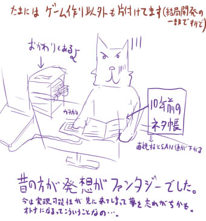

シルバーセカンド開発日誌
■
2012-10-11 (木) これからに備えて▼
というご質問ですが、今は
「シルフェイド学院物語のバグ修正」や
「食っていくためのゲーム案を考えたり」や
「開発ばっかりで『いつかやるリスト』に放置してきた山ほどの雑務」
などをこなしてます。
特に一番やりたかったのが過去のネタ帳の電子化！
何十冊とある（といってもページ全部埋めてるわけではない）メモ帳の
面白いところだけチョイス＆タグ付けしてテキストデータに
打ち込んでいっているところなんですが、自分の目指してた
根源の方向性を思い出せて面白いです。

活き活きとしたキャラが繰り広げる冒険ものRPGにあこがれてたんだなーと
いうのが読み取れたり、女子ヒロインが存在しなくてやたら硬派だったり、
自分の昔と今でどこが違うか分かって勉強になります。
レジェレス時代なんてゾンビ（性別不詳）がヒロインでしたから、
それを考えると例えゲロインでもヒロインがちゃんといたシル見はすごい！
「少年と青年とおばちゃんの3人パーティーって何だよ！？（面白そうだけど）」
なんて言いながら使えそうな案やデータをかき集めています。
考え方が今と昔で明らかに違うなと思ったのは、
今は何か作ろうと思ったとき、
「実現可能性をはかって、できそうな場合だけ案をメモする」
という順なんですが、昔は力量もなく、自然と
「面白そうだったら実現可能性を無視して書いておく」
という方向になっていました。
あまりにリソース無駄使いな、夢にあふれた内容もいっぱい！
今は実現可能性が大幅に上がったので、思いつけば割と何でも作れるとは言え、
以前はいい意味で「技術的に身の程をわきまえない」発想が
たくさん生み出されていたわけで、その気持ちは今も失いたくないものです。
しばらく経てば、それも実現可能になってるのですから。
ただボリューム面に関しては、身の程をわきまえない方向は
ちょっと無理そうだなーということが、色々あって理解できました。
そういうところはコンシューマゲームにお任せー！
自分は自分で、個性を発揮できる方向に向かって
限りあるリソースをうまく使えるよう、歩んでいきたいです。■
2012-02-12 (日) クリフ深淵録が一段落と続・翻訳▼
先週はクリフ深淵録に決着を付けようと、ガーっと執筆していました。
シナリオ部分で、書けそうなところは一通り書いたので、
あとは素材を待ちつつ、それが来たら最終調整をして仕上げです。
長くに渡るお仕事としての連載を終えて、色々勉強になりましたし、
自分のやれる範囲もさらに把握できるようになりました。
自信も付きました。
この経験を活かして、また色々な挑戦に繋げたいですね！
何もないのもアレなので、クリフの妹クリスタの落書きをアップ。
兄のクリフと似ており、基本的に堅物（カタブツ）ですが、
目的のために必要ならどんな手段でも使う柔軟さを持っています。
（ちなみに、山賊との死線をくぐりぬけ、命がけで
人々を守ってきたクリフも、生き残るためなら
騎士道精神など不要だと思っています）
クリフ深淵録、最終話の公開時期は未定ですが、公開されたら、
（ドコモ携帯の方は）よかったら遊んでみてくださると嬉しいです。
なんだかんだでじっくり4ヶ月＋α分くらいのエネルギーをかけてるので、
計４話で300円（月額使用料）くらいの価値はある……
といいなと思います！
何にせよ、モバイルの件も（たぶん向こうもこっちも）そのうち収支が
黒字になれば嬉しいんですけれどね。まだまだ、種を植えた段階です。
でもこの不況下、個人の場合はどこも割とそんなもんかもしれません。
良くも悪くも、だからこそ私みたいな、顔さえオープンにしてない
人間にまで順番がまわってくるわけですから、
チャンスがあるという意味では本当に喜ばしいことなんですけれど。
【翻訳の準備】
シル幻翻訳の方の作業も少し進めました。
画像内の文章を一通り書きだしてリスト化する作業です。
これを翻訳してもらったら、こちらで画像を修正していきます。
フェザーやイシュテナの名前が英語になったらはみ出ないのかとか、
戦闘中の【攻攻集火】みたいな
1文字しか出てないスキル名どうすんのとか、
色々悩ましそうなところもありますが、これからどうなるか楽しみです。
これで今現在やれる手動で行うべき作業は、一段落です。
シル幻は10年近く前のゲームですが、久々にさわってみると
思ったより悪くなくて、不思議な感じです。
この方向性でまた一本作るのも面白そうな感じもしますが、
きっとバグ取りが大変そうです。こういった、流れがフリーなゲームで
フラグ管理で混乱しないための安定かつ低負荷な技法を
考える必要がありそうです。って前にも何度か言いましたね。
ひとまず、今日でクリフ深淵録のメイン作業も、
翻訳の第一ステップもちょうどきりがついたので、
いよいよ片道勇者の開発に戻れます。
想像力いっぱいにして、面白いアイデアを詰め込んでいきたいです。■
2012-02-05 (日) モバイル/翻訳/片道勇者▼先週は、いただいたお仕事を早く完了してスッキリしようと、
モバイル作品『クリフ深淵録』の最終話を
重点的に作成していました。
【翻訳の準備】
シルフェイド幻想譚を翻訳するにあたって、
システムごと修正を要するところがいくつかあります。

たとえば名前入力画面！
カタカナで入力するわけにはいかないので、丸ごと修正です。
が、アルファベット4文字までなのは変わらずなので、
イニシャルで入れていただくか、トムジョントニーや
アランアンナくらいの名前にしていただく感じで。
RPGツクール2000ではピクチャが50枚までしか使えなかったというのも、
今となっては遠い記憶のような気がします。
なお、大部分の翻訳作業は申し出てくださった方が行ってくれるようなので、
自分の方はテキストの準備などがメインになると思います。
（テキスト準備は、翻訳補助ツール作ってもらったので手間はほぼゼロですが）
また他にも、戦闘中の文字やアイテム名は全部画像で作られているため、
これも手直ししていく必要があります。こちらが少し大変かもしれませんね。
【『片道勇者』 今回の実装内容】

※画面は開発中の最新バージョン
・クリア評価を作成しました。
→ 戦闘や宝箱取得率・正義度などさまざまな要素から、
モノリスフィアのクリア評価のような感じで、
総合勇者レベルを算出します。
これでプレイするたびに腕前が上がることを実感…
できるといいんですが。
→ また、特定条件を満たすと称号をゲットできて
勇者レベルにボーナスが付き、ものによっては
新しいクラス（ジョブ）・初期能力が解放されます。
|
残る実装項目の中で、機能的に大きな目玉と
いえそうなのは、あとは「仲間」の機能です。
他にも、細々とした処理や追加機能やら入れたり、
実際に遊んで足りないものを追加していくような、
そんな感じになると思います。
そこから先は、一番肝心な、物語やアイテムやスキルの実装、
そしてクリア評価コメントの執筆です。
その先もバランス調整があるので、じっくり進めて行きます。 【今週の事件簿】
今週は初っぱなからウディタ公式にクラックを受けて
ボロボロにされて、サーバ真っ白の状態から
ヒイヒイ言って復旧していたと思ったら、次は
ウディコンの投稿作品のデータ保管用に使ってた
オンラインストレージのMegauploadが司法省の捜査により
とつぜん閉鎖されてアワワワ言ったたりして、
ドＭにはたまらない一週間でした。
まだ各種復旧が終わっていません。
結局サイト周りで色々復旧に努めていましたが、
せっかくなのでちょっとだけ手を加えています。
・ウディタ公式に画像・音声素材データ集を追加
＞コモンイベント集と同じ形式のものです。
これで素材もデータベース化できると思います。
・本家のお絵かき掲示板に拍手機能追加。
＞ コメントを付けづらい人も安心の、拍手機能を追加しました。
すばらしい一枚にはぜひ1拍手を。各イラストに1回ずつ拍手可能です。
【幻想譚 英語版】
それと、どこまで達成されるかはまだ未知数ですが、
ちょっと情報交換してみた限りでは能力的にプロい雰囲気がする人から
お話をいただいて、シルフェイド幻想譚の翻訳の話が動き始めています。
自分は他人にお尻を叩かれない限り、やりたいことだけ
まっしぐらで進めちゃうタイプなので、海外進出の足がかりとして
ちょうどいい機会かもしれません。
【クリフ深淵録】
シルバーセカンドモバイル(ｱｰｶｲﾌﾞ)の方は、
クリフ深淵録の3話（第2章）が公開されたそうです。
またそろそろこ最終話の作成に取りかからなければならないので、
各々に優先順位を付けて、こなしていく必要がありそうです。
あれもこれも、どれも楽しいことばかりなんですが、
メモリがパンパンになってしんどい目にあってばかりなので、
少し落ち着いて取り組んでいきたいです。
去年の自分は今の自分から見ると、かなり狂気に踏み込んだ感じでした。
＞拍手コメント
（主にサーバクラックの件への）応援の拍手コメント、ありがとうございます！
暖かいコメントが励みになります。おかげさまで、まだまだがんばれそうです！ ■
2012-01-02 (月) あけまして＆片道勇者10+絵▼ということで新年明けましておめでとうございます。
辰年ということで、露出度100％ばいーんな
年賀状イラストを皆さんにプレゼント！

クリックすると全体図へ
今年も一年、よろしくお願いいたします。
去年は本当に死ぬかと思ったので、
今年はマイペースにゆっくり行きたいです。
【片道勇者は？】
12/31の年越し頃、片道勇者プロトタイプのテストを行いました。
印象としては、
・オンライン機能は、割とほぼ正常に動きました。
・が、それ以外のところで大量のバグが出ました。
矢が増殖する、マップがループするとおかしくなる etc……。
・バグで入口が開かない建物があったが、ほとんど誰も不審に思わず、
片道勇者の世界では全ての建物に入口がないのが普通と思われていた。
（いちおう攻撃で壁を破壊して侵入することは可能だった）
・いくつかインターフェース修正の要望が出た。
・ショップ店員を倒してアイテムを奪っても現状ペナルティがないので
そこらで強盗殺人事件が多発するという物騒な状況になった。
といった感じでした。まだまだデータが少ないので、
ここからどんどんデータのバリエーションを増やしたり、
システムの拡張を行って面白くしていきたいと思っています。
ご意見を下さった皆さま、本当にありがとうございます！
【13周年ゲーム企画 『片道勇者』 今回の実装内容】
・マップエディタを実装、これでマップの作成が早くなります。
・同じ世界でプレイしている他の誰かがゲームオーバーになると、
幽霊として出てくるシステムを実装
＞逃げるようにスクロールの向こうに移動していきますが、
話しかけると経験値がもらえます。
・ゲーム開始時イベントを実装
・様々な地形を実装（雪原や荒野・遺跡群など）
＞ 今後、地形別に個性を持たせていく予定です。
・オンラインアップデートシステムを実装
・各種お店を実装
・ダンジョンを実装
といっても現状は犬小屋と呼ばれる野犬が大量に詰まった
入口のない木の建物だけです。
ものにもよりますが、敵がたくさんいたり、簡単な迷路があったりします。
・死亡時の処理を実装。おそらくたくさん死ぬゲームなので、
死に方によってメッセージが変わるようにしています。
|
まだまだ他にも実装すべき点は残っていますが、
ひとまず第一段階としてはダメゲー確定という感じもなく、
そこそこ希望があるかなという印象でした。
以下は拍手コメントです。
＞「2011年を生き残る」もうすぐ達成ですねｗ
おかげさまで無事、達成することができました。
終わってみると、これでもけっこう難易度が高い目標に感じます。
今年はほどほどに、焦らず行きたいです。
＞できれば今年中に公開してほしい! とても楽しみにしているので
＞もう少し、公開までがんばってください｡｡。 .
おかげさまでプロト版テストは何とか2011年内に達成できました！
まだまだ5分や10分程度しか遊べないゲームなので、
ここからしっかり熟成していきたいですね。
できればあんまり受験を邪魔しないレベルで！
去年は色々お仕事をいただいて新しい経験がたくさんできた一方、
PCゲーム開発に投入できる時間が少し物足りなかった一年でした。
今年の時間は、みっちりPCゲーム開発に投入したいです。
よかったまた、ときどきサイトに立ち寄ってくださると幸いです。
あなたも私も、よい一年になりますように。 ■
2011-10-08 (土) 12/24の13周年記念ゲーム▼
このサイトができてから13年、ここまで続けられたのも
ひとえに皆さんのおかげです！
今週の落書き
ということで、あれやりたいコレやりたいが溜まってる最中に
アレなんですが、リハビリがてら、12月24日に13周年記念作品として、
ミニゲームを作って配布したいと考え始めています。
（10月末までウディタ本、11月末までクリフ深淵録の開発で
いっぱいなので、取りかかれるとしても12月始まってから）
うまいことやれば、シルフドラグーンゼロの
半分程度のものは作れそうな感じなので、
規模を限界まで圧縮して、どこまで作れるか検討中です。
それと並行して、シル学の追加シナリオ（※ちょっとだけよ）や
追加キャラグラフィックも、準備していきたいと考えています。
去年8月から続いたカオスな一年間でしたが、
ようやく12月から半分自由です。
今一度、自分の本当にやりたかったことを見つめ直して、
さらなる集中力を投入できる日々に挑んでいきたいと思います。
ウディタ本の原稿執筆の方も、いよいよ終盤にさしかかっています。
実際に編集の人に渡したらいっぱい直しが入るかもしれませんが、
ウディタに触れる人にとって少しは参考になるよう、
調整していきたいと思います。
以下は気になった拍手コメントです。
（ウディタについて）
＞メニューをResouceHacker等で日本語から英語に
＞翻訳したりするのは許可されているのでしょうか？
たぶん自分一人だと、しばらくそういったことに取りかかれないので、
やってくださるのでしたら、むしろぜひお願いします！ という感じです。
ただし、それによって発生した問題に対しては責任を
取れませんので、どうかそれだけご了承下さい。
（英語版を勝手に作って勝手に配布してくださる分にはＯＫです！
という立場です）■
2011-10-01 (土) 執筆＆ＲＰＧ作成▼やっぱりゲームを作るのは楽しい！
でもいちおうウディタ本執筆中のウルフです。
【サンプルＲＰＧ作成】
ウディタ本の説明用に短編ＲＰＧを作ったのですが、
やっぱりゲーム作るのが楽しすぎてたまりません。
今までゲーム作ってるのが呼吸同然に当たり前になってたので、
ほんのひとときでもゲーム開発から離れた後に、
久しぶりにゲーム作りに手を付けると、楽しすぎてヤバい！

ウディタ本 基本システム解説用 短編RPG
ウディタ本は完全な初心者向けなので、本の第１部では、
基本システム2を使って実際にゲームを作りながら、
その作成手順を解説する流れにしています。
サンプルゲーム自体は超短編で、大したことはないのですが、それでも
マップを作ったりイベントを作ったりすると、本当にワクワクします。
【ＲＰＧ開発について思う事いろいろ】
これまで、シル学やクリフなどテキスト重視のゲームばかり作っていて、
マップ作成や、キャラをちょこちょこ動かすような刺激が少なかったので、
サンプルゲームを少し作っていたら、ＲＰＧ作りたい欲が
ムクムクと沸き上がってきています。
い、今それどころじゃないのに……！
ちっともＲＰＧを作らない私が言うのも何ですが、
色んなゲームジャンルの中でも、やっぱりＲＰＧは、
作っていて楽しめる部分が多いジャンルのような気がします。
ＲＰＧには、マップを作ったり、イベントを作ったり、
キャラクターを動かしたり、武器やスキルを大量に作ってみたり、
戦闘バランスにやたらこだわってみたと、色んな要素があります。
どんな人も、最低どこか一つくらいは楽しめる所があるという意味で、
ゲーム作成入門として、これほどいいゲームジャンルは
ないんじゃないかなとも思うほどです。
もちろん逆に、ＲＰＧで全要素をしっかりまとめようとすると、
全部マスターしなければならないわけで、
極めようとし始めれば、恐ろしいほど
奥が深いジャンルと言えそうな気がします。
また作ってみたいなあ……。
拍手コメントも、いつも本当にありがとうございます！
＞用紙質感はいろいろいじると楽しいですよね。 .
＞用紙質感の下にある画材効果「水彩境界」も .
＞（私はあんまり使いこなせないのですが）面白いですよ。
アドバイスありがとうございます、ぜひまた挑戦してみたいと思います！
水彩絵は塗り直しできないのに恐れがあって、なかなかトライできてないのですが、
そのうちそんな塗りでゲーム作ってみるのも面白そうかなと思っています。 ■
2011-09-25 (日) ウディタ本執筆80％▼先週もずっとウディタ本の執筆を進めていました。
その最中、素材を作る必要があったので、
ペイントソフトを色々いじって遊んでいました。
変わったブラシや用紙質感など、表現の幅が広がりそうな機能を
これまで全然使ってこなかったので、ちょっといい勉強になってます。
しばらくはお見せできるものも開発状況も出せそうにないので、
副産物や落書きなどを、毎週公開していこうと思います。
【副産物】 羊皮紙っぽい感じの一枚絵（タイトル用）
本に同梱するプチサンプルゲーム用です。
【落書き】 用紙質感のテスト

前回はたくさんの拍手コメント、本当にありがとうございました！
どうも昨年から情けない姿をお見せしていたようで、
心配をお掛けしたようです。
今はお仕事の目処が付いてきたので、いよいよやる気満々ですよ！
やっぱり自由さがないと、なかなか元気が出ないみたいです。
ゲーム面白かったよというコメントも、本当にありがとうございます！
＞新しいゲームを作りたくて尻がムズムズするなら、
＞シル見に取り入れてしまうのもアリだと思います。
今最有力な新作案は、どんどんキャラが死んでいく系のシステムなので
アドベンチャーゲームとの親和性はあんまり高くなさそうです。
作るなら、RPGとしてでしょうね。また幻想譚のときみたいに、
短編王道RPGのつもりで作り始めてみてもいいかもしれません。 ■
2011-09-19 (月) ゲーム作りたい！(本書き中)▼ゲーム作りたいよぉぉぉウオオオオ！
という状態になっているウルフです。

だいぶ昔に描いた落書き。疲れたときに書いたので「疲れた」って
書いてありますが、今の自分はすごく元気ですよ！
【ウディタ解説本 執筆中】
現在取りかかっているウディタ解説本は、
ページ数的には、最大ページ数の６５％まで到達した段階です。
本に同梱するサンプルゲーム作成と並行して、今は、
実際にゲームを作る過程を解説する部分を書いてます。
１０月中旬くらいには一通りの完成まで行ければいいんですが、
まだまだ状況は未知です。いつも通り、予定通りに終わらないオチが
発生しそうなので、最悪完了時期は長めに
見積もらなければならないでしょう。
【これからどうする？？】
ウディタ本の執筆が終わったら、
すぐクリフ３話の締め切りが迫っているので、
そこまで終わったら、いよいよ自由なゲーム開発に戻れます！
ピンと思いついたゲームのプロトタイプなど
色々開発していきますよ！
今は新しいゲームの原案がどんどん溜まってて
新しいゲーム作りたい病が爆発しそうです。手がプルプル……（禁断症状）
それからもう少し経ったら、またクリフ４話の開発を行って、
それで、クリフ深淵録の件は終了となります。
去年８～９月から始まった、お勤めやらモバイルやら本の依頼やら
ついでにシル学開発やらが並行してて死にそうな一年でしたが、
これからは色々解放されるので、リスク無視で
（自分も一部の皆さんも）大満足できるような
挑戦的なゲームを作っていきたいですね！
人から色々仕事を請けたり、生まれて初めてのお勤めをしたことで、
この一年で大きく成長できたと感じられるので、これからも
それをゲーム開発に活かせればいいなと思います。 ■
2011-09-13 (火) シル学アンケート結果発表▼ということで、シルフェイド学院物語のアンケート結果、
ようやく発表です。
シルフェイド学院物語 アンケート結果発表ページ
https://smokingwolf.github.io/ank/silgaku_ank.htm
言いたい事は全部アンケート内で言ってしまったのですが、
気になったところだけいくつか。
【キャラ人気投票】
1位 ウリユ、2位 黒のサラ、3位 メアリー のトップ３と、
男性内ではロベルト（教頭先生）が一番という、
かなり意外な展開に驚きました。
特にメアリーは、幻想譚のときから、色々と
キャラ付けしたかったのに出番が少ない微妙キャラだったので、
ここで好きになってもらえてよかったです。
ちなみに、幻想譚では一応ヒロイン的位置づけのつもりだったにも関わらず
パッとしなかったシズナさんは、
今回も１２位とほどほどなポジションでした。
【もう一度値段を付けるとしたら？】
「遊んだ後に、もう一度値段を付けるとしたらいくらですか？」
正気だと、こんなのとても恐くて聞けない再評価額ですが、
今回はおかげさまで、無事、再評価額2231円と、
販売価格の2000円を超えることができました。
もちろん、アンケートで、足りない部分も明らかになったので、
その部分を補填できるよう、色々データ追加も検討中です。
（特にシルノ勢の顔グラフィックは、あれば色々使えそうです）
この遊んだ後に付けるお値段、普通の
コンシューマゲームなどに対しても、聞いてみたいですね。
あなたが好きなあのゲーム、もう一度値段を付けるとしたらいくらですか？
シルフェイド幻想譚なんかもどうなんでしょう、500～800円くらい？
【ユーザデータ大賞！】
ご意見を頂いたときから考えているのですが、
自分がおすすめユーザデータを選定できていないのもあるので、
時間が空いたら、「ユーザデータ大賞」的なものを
開催したいと考えています。
大賞といっても、たぶん「アップ済みのデータに対する人気投票」に
近いものになると思います。
作りかけをユーザデータ集にアップなさっている方も、
安心して、どんどんアップデートしていってくださいね。
以下はいただいた拍手コメントです。
【アウルについて】
＞メガネ属性が皆無なので、メガネ外せるのがすごく嬉しかった
実は私も、メガネがそこまで好きってわけでもないんですよ。
＞「アウルの絵とっても素敵です。」
＞「アウル＆フェザー可愛いですね（＾o＾*） .
＞ ふんわり着色＆ほんわか表情に癒されまくりです。」
ぬおおおおありがとうございます！ 絵を描くたびに
叱られてばっかりなので、そう言われると嬉しいです。
これからもときどき絵を描いていきたいです。
【ユーザデータについて】
＞ふと気になったのですが、ウディコンだけではなく .
＞シル学ユーザデータコンテストも開催してみてはいかがでしょうか？
上でも話しましたが、素晴らしいユーザデータを
いっぱい作ってくださっているので、
何かしら評価できる舞台は、ぜひ作りたいと思います！
Copyright © SmokingWOLF / Silver Second
 カテゴリ: 開発日誌
カテゴリ: 開発日誌 カテゴリ: 開発日誌
カテゴリ: 開発日誌